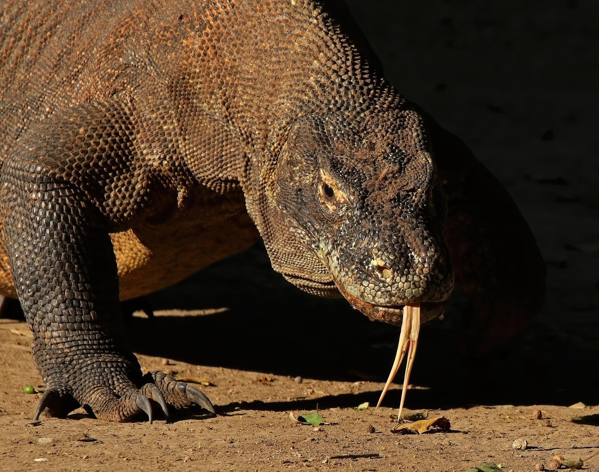
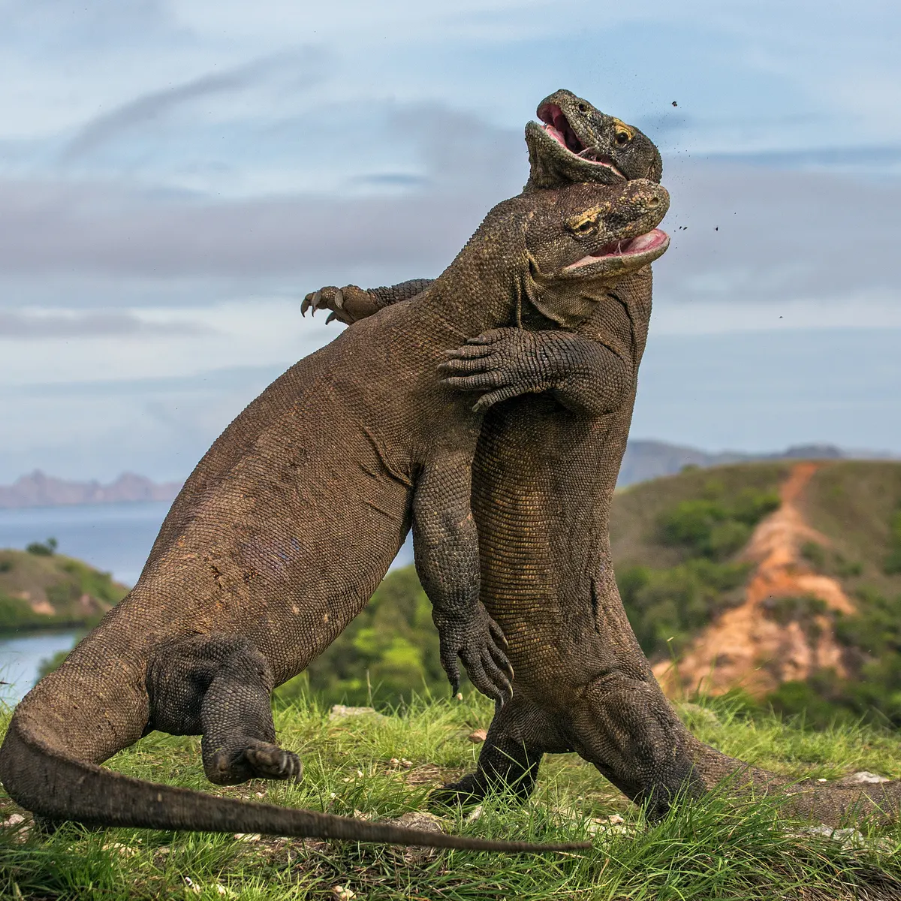
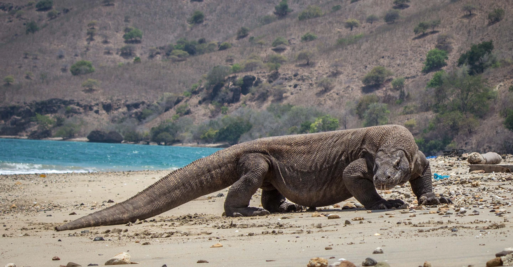
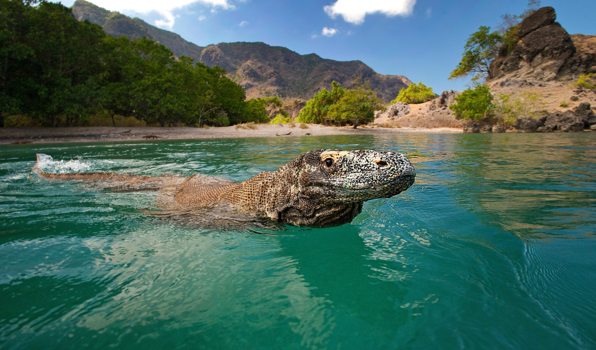

Komodo dragon
The Komodo dragon, also known as the Komodo monitor, is a member of the monitor lizard family Varanidae that is endemic to the Indonesian islands of Komodo, Rinca, Flores, and Gili Motang.
 The average size of a male Komodo dragon is 8 to 9 feet and about 200 lbs., according to the Smithsonian National Zoological Park, but they can reach a whopping 10 feet (3 meters) in length. Females grow to 6 feet (1.8 m).
The Komodo dragon is the largest living lizard in the world. These wild dragons typically weigh about 154 pounds (70 kilograms), but the largest verified specimen reached a length of 10.3 feet (3.13 meters) and weighed 366 pounds (166 kilograms). Males tend to grow larger and bulkier than females.
Komodo dragons have 60 razor sharp teeth up to one inch (2.5 cm) long. Lost or damaged teeth are constantly replaced. Dragons can go through four or five sets of teeth in their lifetime. Their teeth allow dragons to tear off large chunks of flesh which they swallow whole.
Due to the fact that the Komodo Dragon is the most dominant predator in its environment, mature adults have no natural predators in their native habitats.